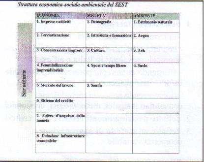
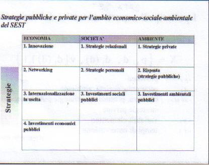

Torna alla pagina di Economia del Cambiamento Tecnologico
:: Economia del Cambiamento Tecnologico ::
Lezione 03/10/2008
Indice
Un settore industriale può essere studiato suddividendolo in:
Questi tre elementi sono strettamente interconnessi tra loro ed esistono relazioni circolari. Cioè decisioni strategiche influenzano le prestazioni che possono a loro volta influenzare la struttura, oppure prestazioni superiori possono influenzare la grandezza della struttura e cambiare le strategie di scelta e così via.
Questo modello è molto semplificativo perchè non tiene conto di tutti gli elementi esterni. Vediamo cosa si intende:
Oltre ai tre elementi già citati, quelli che costituiscono un sistema locale sono anche:
Per semplificazione comunque ci occuperemo solo di quelle quantità che possono essre descritte numericamente.
Qualunque territorio può essere allora misurato con delle tabelle che mettono in relazione:
| Economia | Società | Ambiente |
--------------------------------------------------
Struttura | | | |
--------------------------------------------------
Prestazione | | | |
--------------------------------------------------
Strategia | | | |
--------------------------------------------------
Il PIL è l'indicatore di sintesi per eccellenza, fornitoci dal Governo.
Esso è utile anche per calcolare l'inflazione.
O meglio per calcolare la deflazione.
Per farlo occorre:
PIL2008 = q08(quantità)*p08(prezzo)
PIL2008(costante) = q08*p07
La formula è:
Deflatore del PIL = PIL08 - PIL07(costante) / PIL08 (costante)
Mentre l'inflazione che calcola l'ISTAT prevede di prendere un paniere dei prezzi che comprende generi di largo consumo (come uova, pasta, carne di struzzo, playstation, decoder digitale, tritabottiglie elettrico) e confrontarne i prezzi.
Dopo questo piccolo escursus, torniamo a noi. E' il PIL la risposta? NO
Il PIL ha dei limiti:
Perciò si passa attraverso misure di qualità della vita:
Sono tutti esempi di istituzioni che calcolano ad esempio la città dove si vive meglio/peggio, qualità della vita attraverso il sistema urbano (esempio criminalità, aree verdi ecc) Vediamo quali sono le variabili:


Y = f(K;L;T;v;Ɣ)
Dove:
T = terra
v = fattore di scala (economie di scala cioè in base alla dimensione dell'impresa)
Ɣ = efficienza
Quando si parla di efficienza confronto gli impieghi con quanto ho ottenuto (confronto I/O).
Che è diversa dall'efficacia. Per ottenere una misura di efficacia metto in relazione obiettivi iniziali e risultati.
Il terreno si può sommare al capitale.
Per avvicinarsi al settore informatico dovremmo scomporre il K in materiali e immateriali.
Quando guardo la funzione di produzione con Y e L sugli assi e gli altri fattori sono fissi, se varia uno degli altri fattori gli effetti sono che la funzione trasla nel piano. Oppure sugli assi ci potrebbero essere Y e K.